| 日付 | 2025年8月12日（火） - 2025年8月17日（日） | ||||||||||
|---|---|---|---|---|---|---|---|---|---|---|---|
| 山域 | 北アルプス | ||||||||||
| メンバー | 単独 | ||||||||||
| 山行形態 | 5泊6日テント、車中泊 | ||||||||||
| アクセス | 車、バス、電車 | ||||||||||
| ルート (Map) |
|
2日目
昨夜は称名平への道が雨天通行止めで、立山駅前の駐車場で車中泊する。
朝起きて空を見上げる。曇が多い。
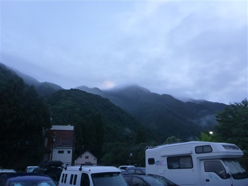
駐車場はもう満車だ。
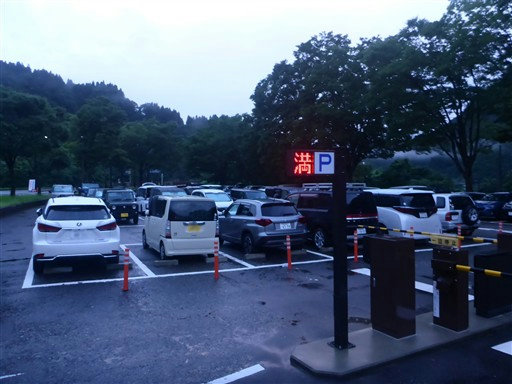
ケーブルカー。もう登山者や観光客は動き出している。
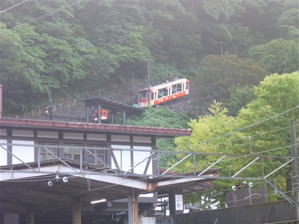
橋から眼下を流れる称名川を眺める。
多くの車が立山駅へ、そして称名平へ向かっていくのが見える。
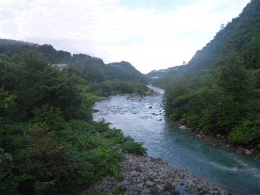
縦走の帰着点、称名平へ車を移動させる。
ここから入山口の折立まで公共交通機関で移動する予定だ。
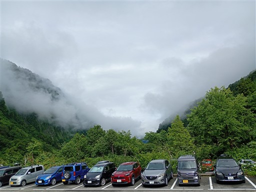
バスの時間まで2時間半あり、暇なので称名滝を見に行く。
目の前に見えているのはハンノキ滝。
落差日本一の称名滝350mより大きい落差497mの滝だ。
消えているときも多い幻の滝だが、昨日の豪雨で現れたようだ。
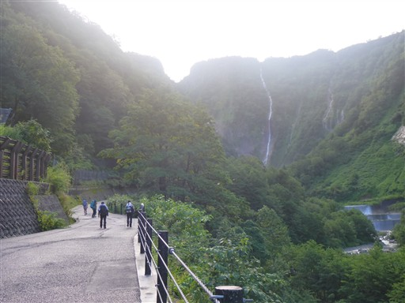
大日岳の登山口を通過する。4日後、ここに下山する予定だ。
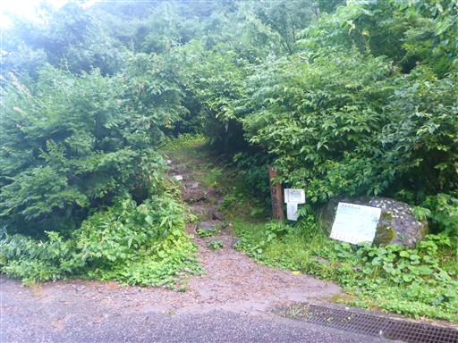
称名橋に到着。水しぶきが凄まじい。
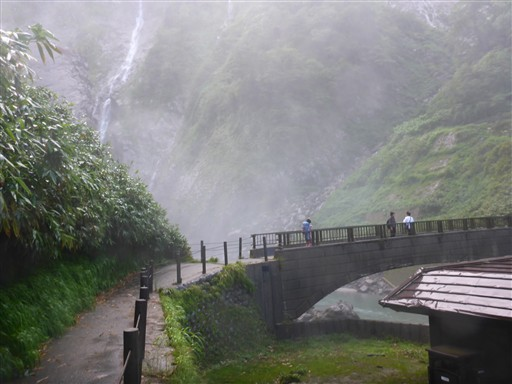
水しぶきを浴びながら撮影。
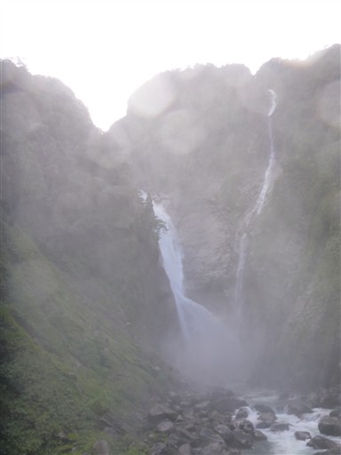
左岸の展望台に登って称名滝を眺める。
落差350m、四段で流れ落ちる名瀑だ。
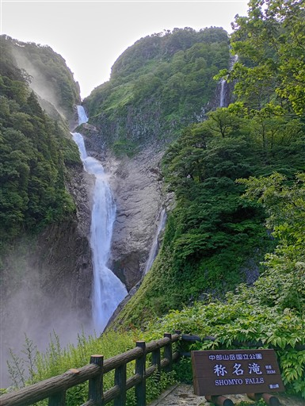
八郎坂の入口。ヤマレコでは通行止めと書かれていたが、
特にそのような注意書きは見当たらず、通れそうだ。
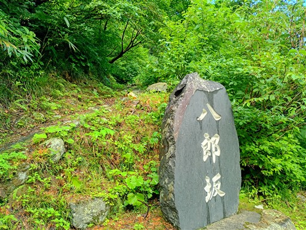
龍のように筋状の雲が流れていく。
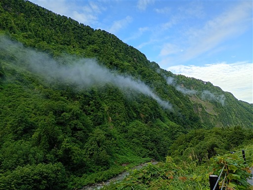
暇なので展望園地と記載された遊歩道に入ってみる。
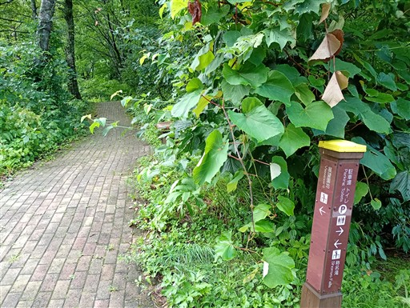
緑に包まれた道。
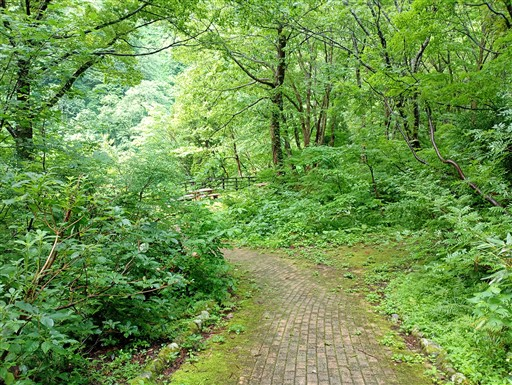
遠く、称名滝とハンノキ滝が見える。
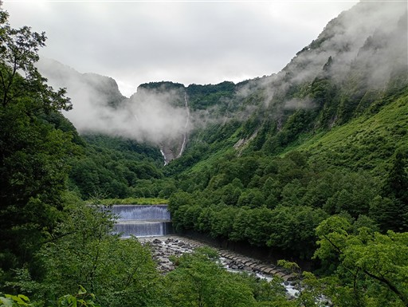
道は苔に覆われている。あまり歩く人はいないようだ。
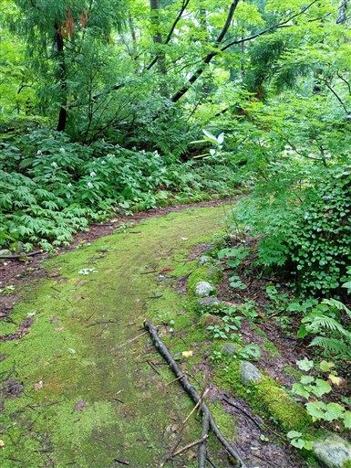
始発の9時のバスにようやく乗り込む。
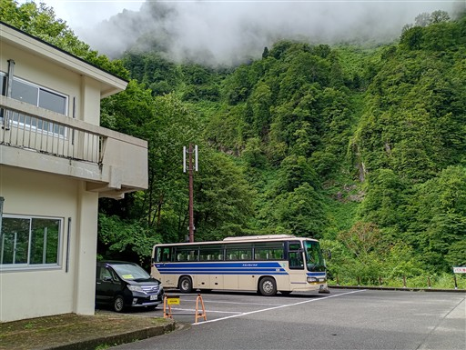
バスから眺める悪城の壁。称名川の左岸に広がる大岩壁だ。
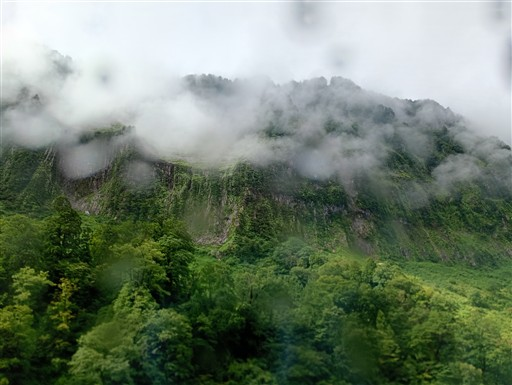
立山駅に戻ってくる。もう広大な駐車場は全て満車になっている。
ものすごい人出だ。町並みを見ても「観光地」という感じがする。
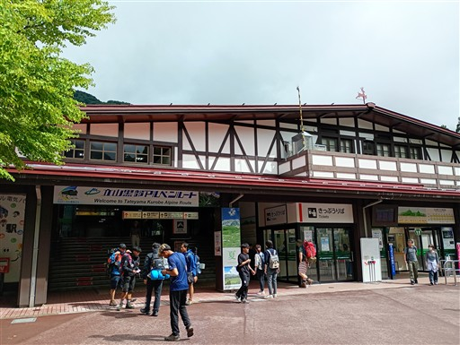
富山鉄道で有峰口駅に向かう。
ローカル線なのだが、観光客で満員だ。

怖いくらい細い鉄橋を渡る。
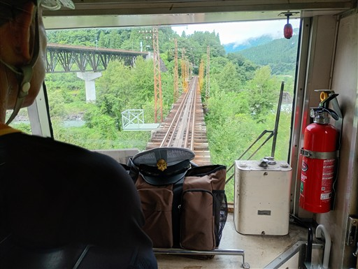
電車は森の中を進む。カーブの前では減速し、ゆっくりゆっくり進む。
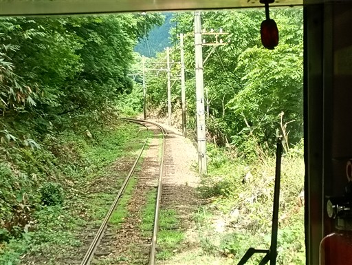
有峰口駅に到着。
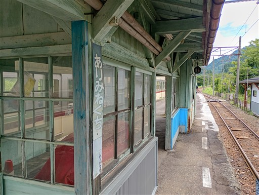
駅舎。ここで折立行きのバスを待つ。
バス停は離れた場所にあるのだが、本日はここまで来るようだ。
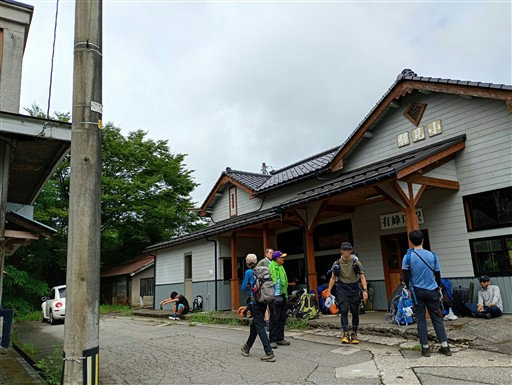
駅前の風景。
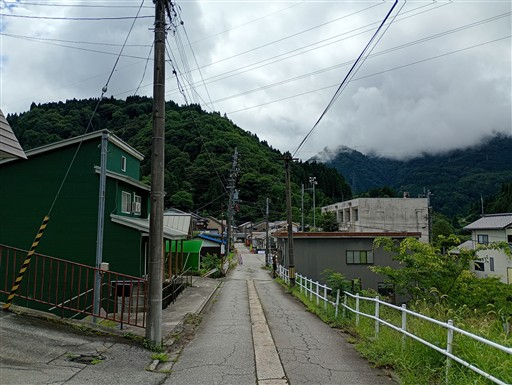
駅舎の中には遭難した子の母の短歌が掲示されている。
調べたら、1963年の愛知大学薬師岳遭難事故の時のもののようだ。
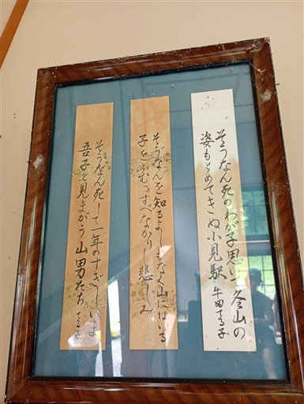
折立行きのバスが到着。なんと細い道をバックで入ってきた。
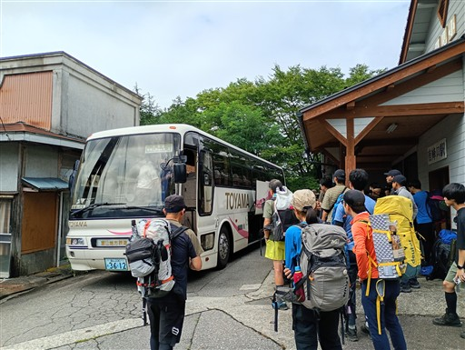
折立に到着。標高1360m。
北アルプスの西側にあるこの地は、関東に住んでいる人からすると縁遠い。
この地に来るのは初めてだ。
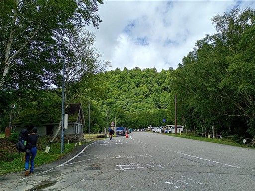
登山口。ここで会社の人に声をかけられる。
こんなところで知り合いに出会うとは、ものすごい偶然だ。
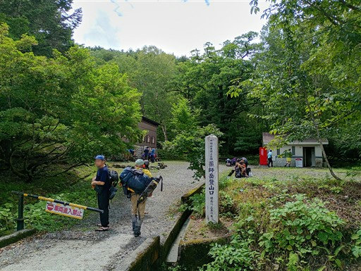
登山口に立つ巨木。準備を整えて出発。
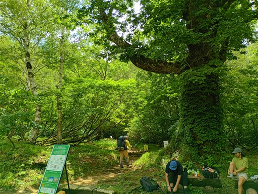
これも愛知大学薬師岳遭難事故の時の慰霊碑だ。
13名が亡くなったので、十三重之塔になっている。
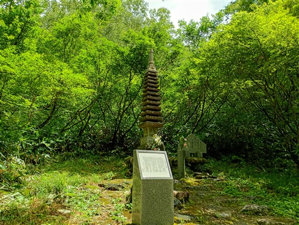
登山道は非常に歩きやすい。さすがは北アルプスだ。
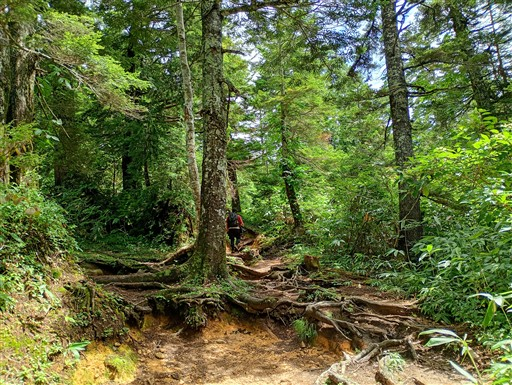
アラレちゃん展望台に到着。
なぜアラレちゃんなのかは知らないが、昔からあるようだ。
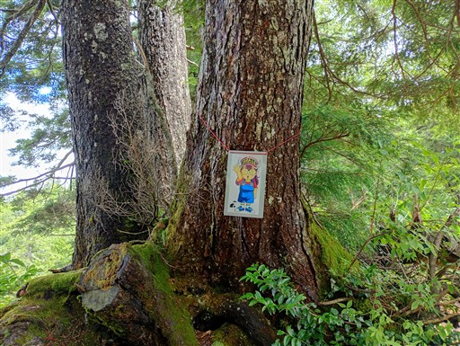
青空は見えるが雲が多く、展望はあまり広がらない。

標高が低いうちは、樹林帯が広がる。
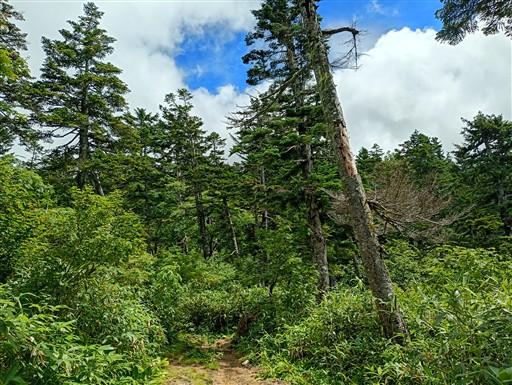
青淵三角点に到着。ここで昼食休憩をとる。
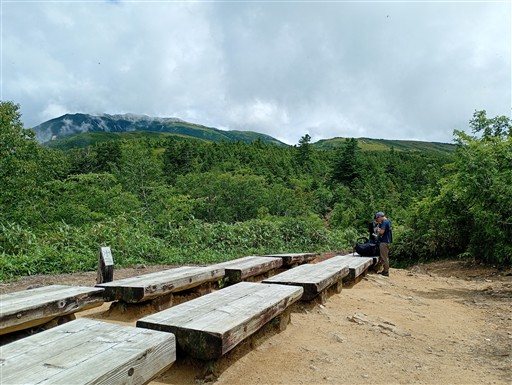
傾斜が緩んで木道が現れる。
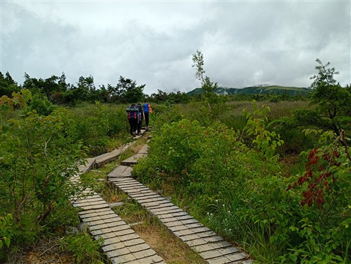
左の方に見えるのは薬師岳の稜線だろうか？
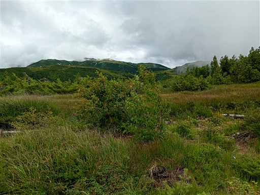
振り返ると有峰湖が見える。発電目的で作られた巨大なダム湖だ。
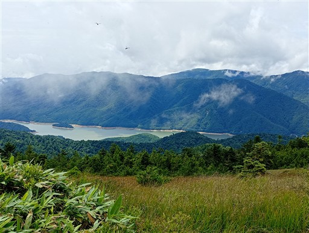
緩い階段が続き、非常に歩きやすい。
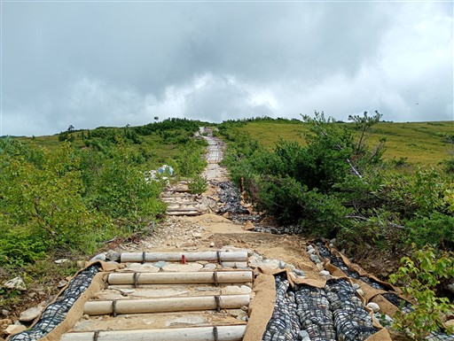
五光岩ベンチを通過。
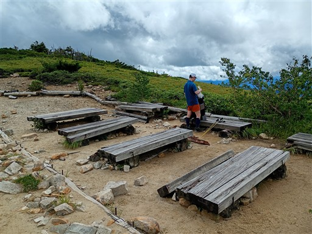
石が真っ二つに割れている。
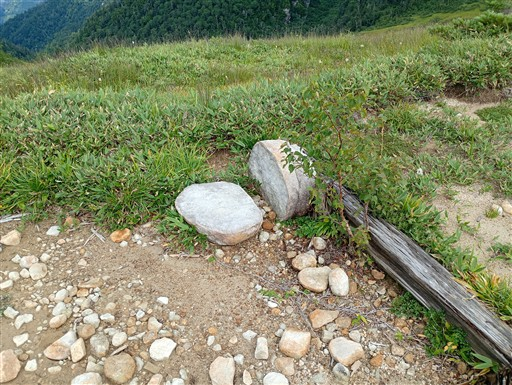
のびやかな尾根道。本日一番の景観だ。
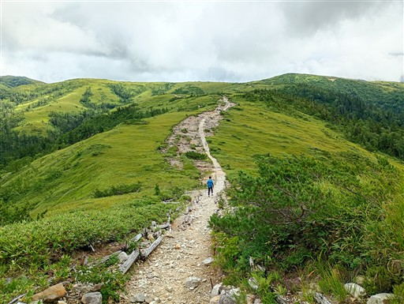
太郎平小屋が見えてきた。
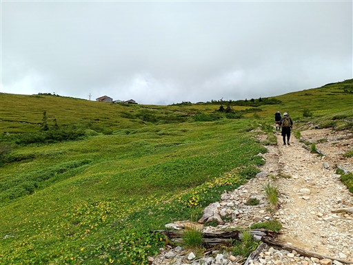
太郎平小屋に到着。ここは登山道の交差点で、多くの人が集まる拠点だ。
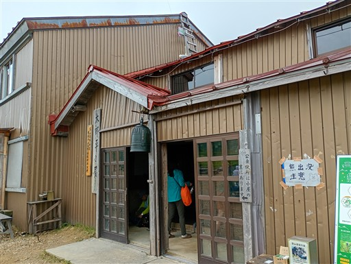
黒部五郎、薬師、雲ノ平などなど、様々な方面へ通じている。
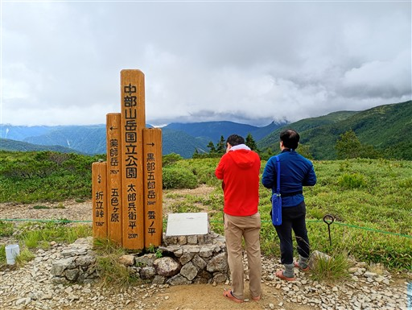
残念ながら展望は広がらず、雲がすぐ近くまで迫っている。
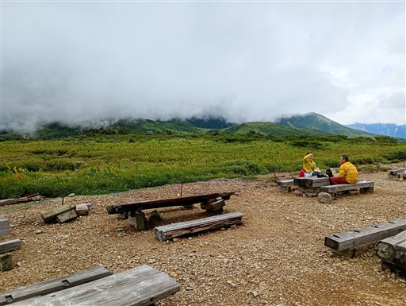
キャンプ場はここから少し下った薬師峠にあるので、そこに向かう。
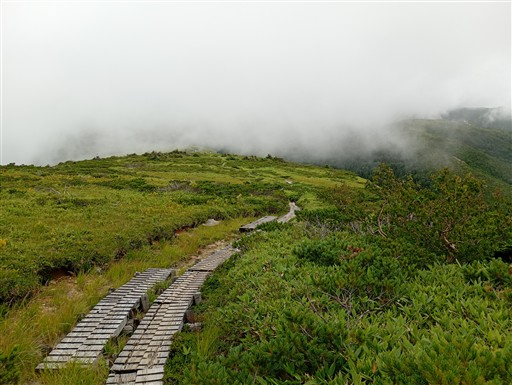
小さな池塘。
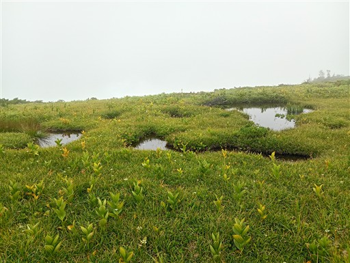
眼下に薬師峠キャンプ場が見えてきた。
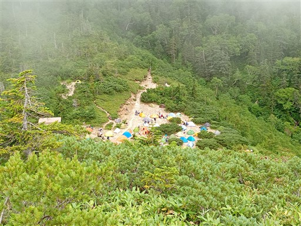
薬師峠キャンプ場に到着。
石が多く、傾斜がある場所も多く、良い場所はすでに取られていて、なかなか辛いキャンプ場だ。
北アルプスでテントを張るのは初めてで、こんなに人が多いテント場も初めて。
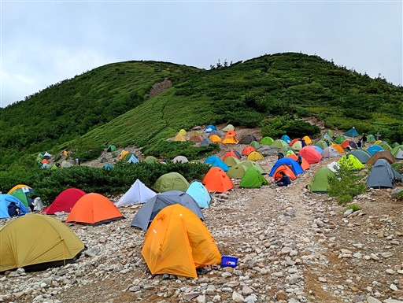
水は豊富に出ていて、水筒が2秒で満タンになる。
久々の山でのテントだが、比較的スムーズに設営、食事を終える。
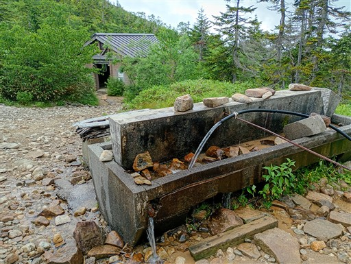